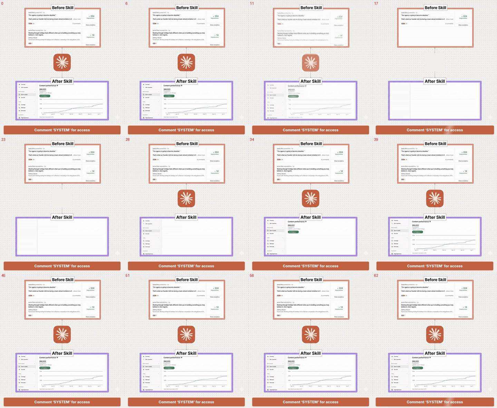
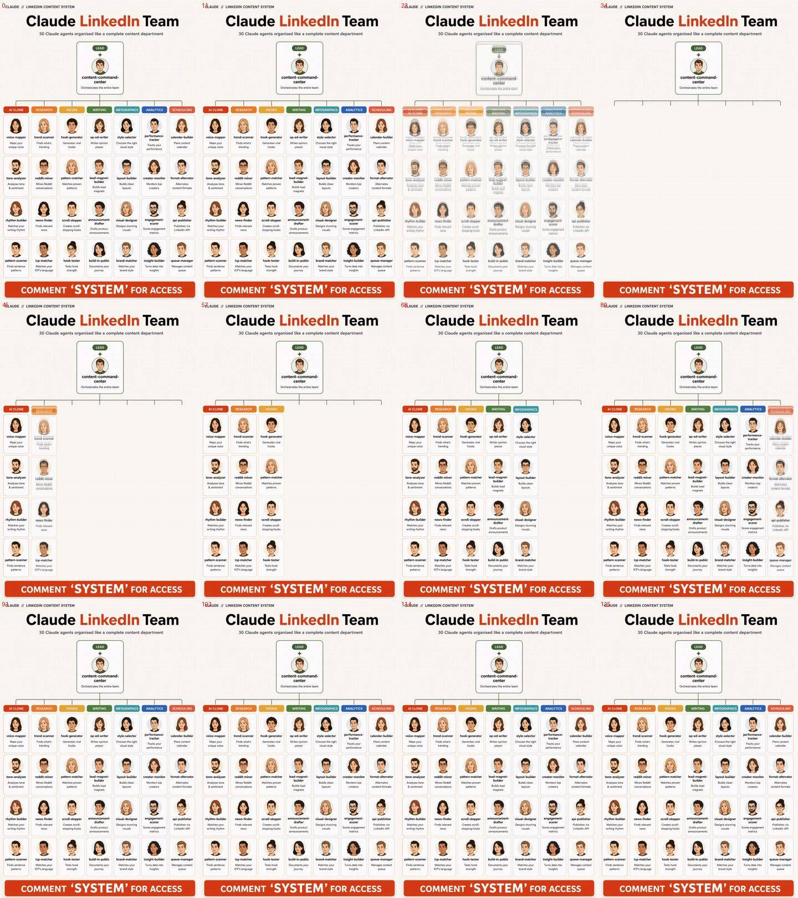
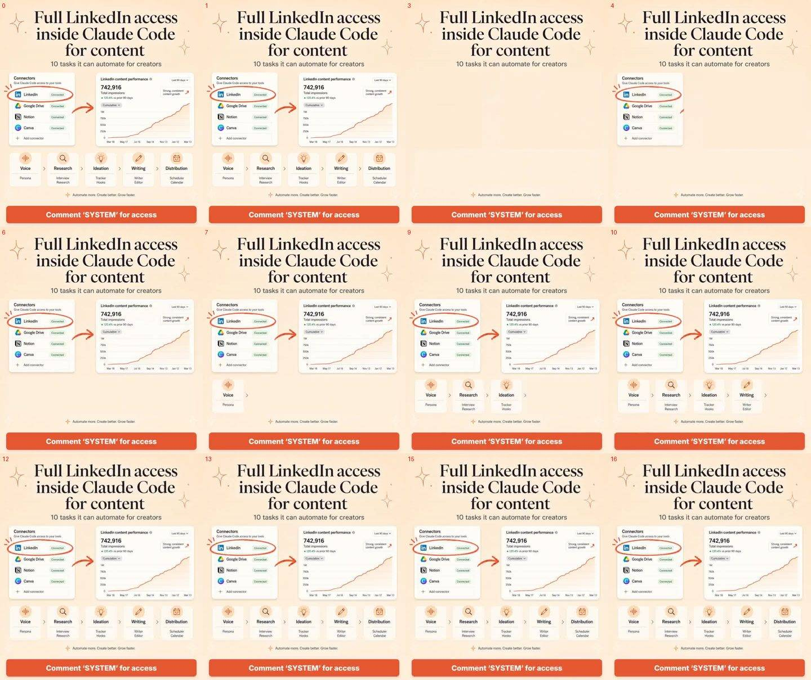

Batch 3 (build 6) for Susanne: the board career, from executive to board, 10 posts
Built 2026-11-25 as drafts (kits/content/batches/b6_build.py); not rendered on this machine; owner pick and sign-off pending. 3 document carousels (C1, C2, C3), 2 animated pieces (A1, A2), 1 video (V1), 3 single images (S1, S2, S3), 1 text post (T1). Every post has its own sample, archetype and palette; none reuses a batch 4 look.
Carousels
C1Carousel, 9 pagesCTA: Board Programme
Start your board career before you leave your executive job.
- Teaches
- Start your board career while you are still employed: 6 steps
- Asset
- Step-by-step framework deck
- Sample
- AV41 · Alex Vacca · Educational Carousel · Step-by-step framework deck · original post
- Facts
- BL-014, WS-002, WS-004, BL-048, WS-021, BL-030, BL-025, BL-012
C2Carousel, 9 pagesCTA: Board Programme
Being a strong leader is not enough to get a board seat.
- Teaches
- Four reasons strong executives never get a board seat
- Asset
- Editorial article stack, one article per page
- Sample
- AV19 · Alex Vacca · Proof Screenshot · News-article capture · original post
- Facts
- WS-001, BL-024, BL-048, WS-021, BL-016, WS-002, BL-025, CO-026, BL-041, BL-012, CO-015, WS-605 (proposed)
C3Carousel, 9 pagesCTA: Board Programme
A founder is raising. What does the NED actually bring?
- Teaches
- A founder is raising: the board's map of a funding round
- Asset
- Vertical flowchart
- Sample
- AV26 · Alex Vacca · Framework Infographic · Framework diagram · original post
- Facts
- WS-013, BL-040, WS-015, WS-603 (proposed), WS-014, WS-018, BL-011
Single posts
S1ImageCTA: Board Programme
The CV that won your last executive role will not win your first board mandate.
- Teaches
- Your executive CV will not win your first board mandate
- Asset
- Promise vs reality
- Sample
- AV45 · Alex Vacca · Framework Infographic · Comparison graphic · original post
- Facts
- BL-018, WS-022, BL-031, CO-026, BL-012
S2ImageCTA: Board Programme
Advisor, fractional, NED or chair.
- Teaches
- Advisor, fractional, NED or chair: who carries what
- Asset
- Comparison data table
- Sample
- AV20 · Alex Vacca · Framework Infographic · Comparison graphic · original post
- Facts
- WS-003, WS-004, WS-005, WS-022, BL-026, BL-027, BL-029, BL-045
S3ImageCTA: Board Programme
A board seat is not one job.
- Teaches
- Private, PE-backed or public: three very different boards
- Asset
- Three-lane decision tree
- Sample
- AV36 · Alex Vacca · Framework Infographic · Framework diagram · original post
- Facts
- WS-019, BL-041, BL-047, BL-020, BL-601 (proposed), WS-601 (proposed)
Animated pieces
A1Animated image (GIF and MP4)CTA: Board Programme
One executive role, then a portfolio of board mandates.
- Teaches
- From one executive role to a portfolio of board mandates
- Asset
- Animated before/after three-node flow
- Sample
- ID10 · Ipsita Dhar · Promo Graphic · Animated before/after UI mockup · original post
- Facts
- WS-004, BL-030, BL-045, WS-022, WS-602 (proposed)

A2Animated image (GIF and MP4)CTA: Board Programme
6 areas a board-ready executive needs.
- Teaches
- 6 areas a board-ready executive needs
- Asset
- Animated org chart
- Sample
- ID06 · Ipsita Dhar · Framework Infographic · Animated agent org chart · original post
- Facts
- WS-018, CO-020, CO-021, CO-022, CO-023, CO-024, CO-025, BL-031, BL-032

V
V1Video (MP4, with a GIF)CTA: Board Programme
The best rehearsal for a first board seat isn't an interview.
- Teaches
- The best rehearsal for a first board seat is a real board situation
- Asset
- Connector-to-workflow explainer video
- Sample
- ID08 · Ipsita Dhar · Promo Graphic · Animated connector-to-workflow explainer video · original post
- Facts
- WS-020, BL-043, WS-001, CO-015, BL-011

T
T1Text postCTA: Board Programme
Before we match a senior advisor with a fintech, we ask about 9 areas.
- Teaches
- 9 areas we ask about before matching a senior advisor with a fintech
- Asset
- Framework or workflow breakdown, text only
- Sample
- PC17 · Patrick James Cumming · Text Playbook · Framework or workflow breakdown · original post
- Facts
- WS-604 (proposed), BL-045, BL-012